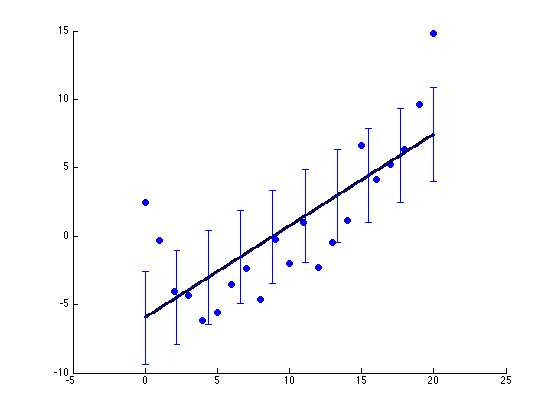

Linear Regression Demo
Contents
Make data
% This file is from pmtk3.googlecode.com [xtrain, ytrain, xtest, ytestNoisefree, ytest] = polyDataMake('sampling','thibaux'); Xtrain = xtrain; Xtest = xtest;
Fit using Matlab's functions
Xtrain1 = [ones(size(Xtrain,1),1) Xtrain]; w = Xtrain1 \ ytrain Xtest1 = [ones(size(Xtest,1),1) Xtest]; ypredTest = Xtest1*w;
w =
-5.9605
0.6704
Test simple linear regression equations
xbar = mean(xtrain); ybar = mean(ytrain); N = length(ytrain); w1 = sum( (xtrain-xbar) .* (ytrain-ybar) ) / sum( (xtrain-xbar).^2 ) w0 = ybar - w1*xbar assert(approxeq([w0 w1], w))
w1 =
0.6704
w0 =
-5.9605
Use pmtk functions to do same thing
model2 = linregFit(Xtrain, ytrain); [ypredTest2, v2] = linregPredict(model2, Xtest); assert(approxeq(ypredTest, ypredTest2)) assert(approxeq(w, model2.w))
Plot
figure; scatter(xtrain,ytrain,'b','filled'); %plot(xtrain,ytrain, 'bo', 'linewidth', 3, 'markersize', 12); hold on; plot(xtest, ypredTest, 'k', 'linewidth', 3); % plot subset of error bars Ntest = length(xtest); ndx = floor(linspace(1, Ntest, floor(0.05*Ntest))); errorbar(xtest(ndx), ypredTest(ndx), sqrt(v2(ndx))) printPmtkFigure('linregDemo1')
Repeat with standardization
This has no effect on the predictions in this case Be careful not to apply standardization to the column of 1s! Note that we use xtrain not Xtrain, and xtest not Xtest
[Xtrain, mu, sigma] = standardizeCols(xtrain); Xtest = standardizeCols(xtest, mu, sigma); model = linregFit(Xtrain, ytrain); ypredTest3 = linregPredict(model, Xtest); assert(approxeq(ypredTest, ypredTest3)) figure; scatter(Xtrain(:,1),ytrain,'b','filled'); hold on; plot(Xtest(:,1), ypredTest, 'k', 'linewidth', 3); printPmtkFigure('linregWedge2Line');